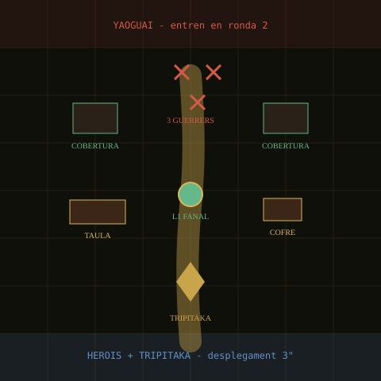

Tutorial guiat - Sense risc de campanya
El Primer Fanal
Pati menut del santuari24" x 24" - Kitchen Table -
tutorial

HeroisYaoguaiFanal / coberturaTripitaka
L'Abat Bakeneko deixa una làmpada apagada al centre del pati. "Abans de
salvar la vall", diu, "aprendreu a no ensopegar amb els vostres propis
peus." Wukong somriu. Cerdito pregunta si després hi haurà
desdejuni.Entrenament al santuari
Esta escena no és una missió normal. És una partida d'aprenentatge. Si alguna cosa ix malament, els gats samurais interrompen l'entrenament i ho tornen a explicar.
Objectiu del tutorial
- Objectiu principal: encendre el Fanal L1 i portar Tripitaka fins a 3" del cofre.
- Enemics: 3 Guerreros Yaoguai entren en la ronda 2 per la vora nord.
- Victòria: el fanal està encés i Tripitaka no està capturat al final de qualsevol ronda.
- Derrota amable: si un heroi cau o Tripitaka és capturat, atureu la partida, expliqueu què ha passat i torneu a jugar des de la ronda anterior.
- Recompensa: cap XP obligatori. Si voleu premi, doneu +1g al grup per haver ajudat l'Abat.
Preparació
- Desplega Wukong, Cerdito i Tripitaka dins de la zona sud de 3".
- Col·loca el Fanal al centre.
- Col·loca el cofre a l'est i una taula o cobertura a l'oest.
- Deixa els 3 Guerreros Yaoguai fora de la taula fins a la ronda 2.
Ronda 1: moure i mesurar
- Activa Wukong i mou-lo cap al Fanal.
- Activa Cerdito i posa'l entre Tripitaka i el nord.
- Mou Tripitaka només si voleu practicar guiar un marcador: un heroi en contacte pot gastar una interacció per moure'l 3".
- Apreneu a mesurar abans de moure i a deixar clar on acaba cada miniatura.
Ronda 2: primer combat
- Entren 3 Guerreros Yaoguai per la vora nord.
- Fes que un yaoguai avance cap al Fanal, un cap a Cerdito i un cap a Wukong.
- Practiqueu un atac de cos a cos i una tirada de defensa.
- Si oblideu una regla especial, ignoreu-la i continueu.
Ronda 3: interactuar
- Un heroi en contacte amb el Fanal pot gastar una interacció per encendre'l.
- Un heroi en contacte amb el cofre pot obrir-lo com a pràctica: dins hi ha una galeta seca i 1g.
- Expliqueu que moltes missions de Quest es guanyen interactuant amb objectius, no eliminant tots els enemics.
IA senzilla
- Si un yaoguai veu un heroi, va cap a ell.
- Si no veu cap heroi, va cap al Fanal.
- Si pot capturar Tripitaka, ho intenta, però només per ensenyar la regla de rescat.
Després de jugar
- Pregunta al xiquet què ha aprés: moure, atacar, defensar, interactuar o protegir.
- Repetiu només les parts que no hagen quedat clares.
- Quan tot estiga clar, passeu a la Missió 1.
{kind=link}
{kind=link}
{kind=link}
.jpg){kind=link}